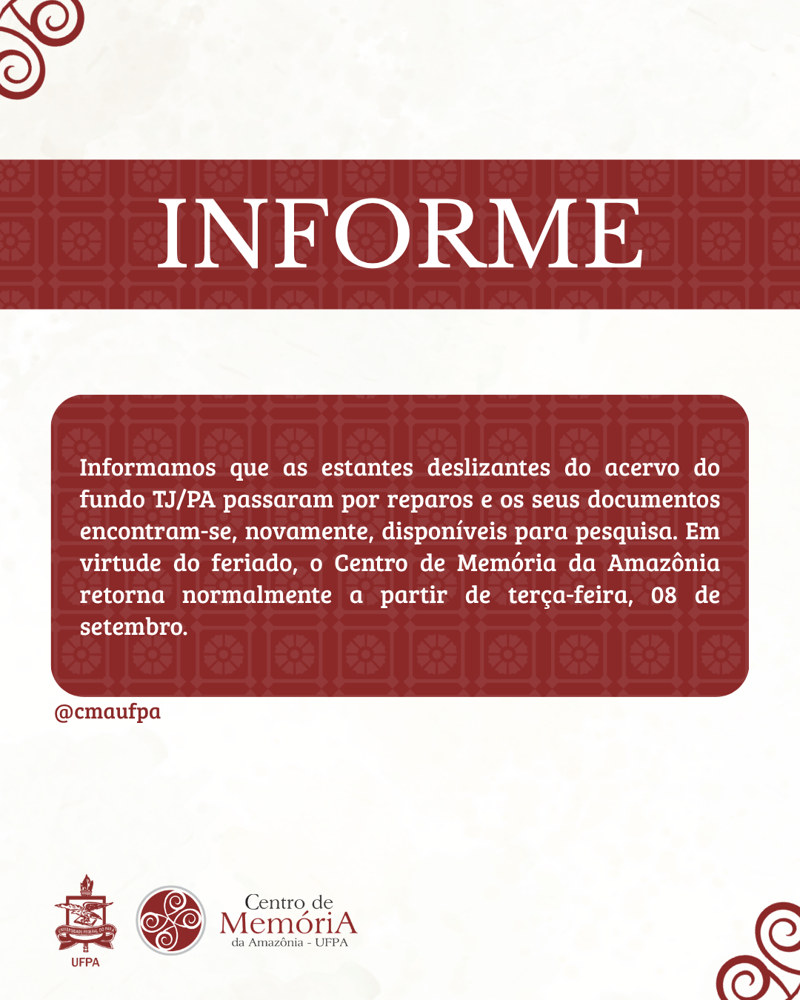
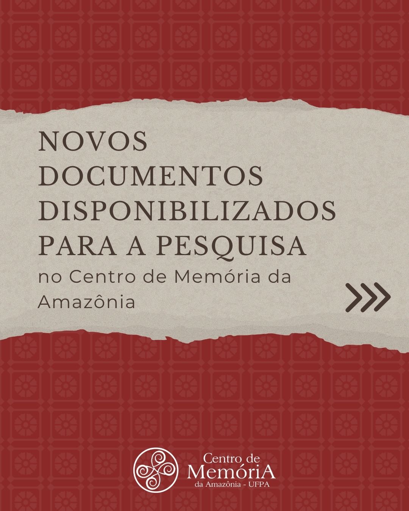

Informamos que as estantes deslizantes do acervo do fundo TJ/PA passaram por reparos e os seus documentos encontram-se, novamente, disponíveis para pesquisa. Em virtude do feriado, o Centro de Memória da Amazônia retorna normalmente a partir de terça-feira, 08 de setembro.

Já está disponível para a pesquisa, no Centro de Memória da Amazônia (CMA), a documentação da procedência cível “Assistência Judiciária”. São cerca de 1.730 documentos, produzidos entre 1935 e 1970.
Confira uma seleção de 10 obras essenciais do nosso acervo sobre religiões afro-indígenas, saberes das parteiras do Marajó, cura ribeirinha, pajelança e saúde popular na Amazônia.

As seguintes fotos compõem uma pequena parte das fotografias localizadas no acervo de Clóvis Moraes Rêgo, parte das Coleções Pessoais da Biblioteca do Centro de Memória da Amazônia.